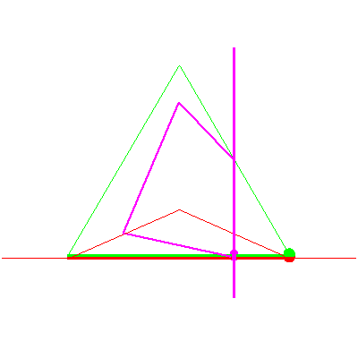
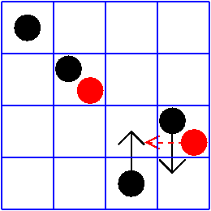

The line lying in a fixed plane in P3


The line lying in a fixed plane in P3 |
|
|  |
In the sixth stage of the specialization sequence, the moving plane rotates about the line, and falls into the stationary plane. This causes the solution line to also rotate and to become the intersection of the stationary plane and the fixed plane. This is a case of (no,yes, in the descending checker's square) of Table 2/Figure 8 in GLR. |
|  |